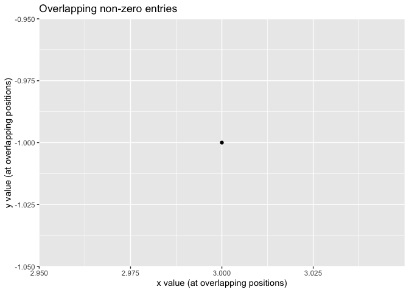

The homework6 package implements an S4 class sparse_numeric for sparse numeric vectors, where most elements are zero. Only the non-zero values and their positions are stored.
The package provides:
- Coercion between base
numericandsparse_numeric - Arithmetic on sparse vectors:
-
sparse_add(),sparse_sub(),sparse_mult(),sparse_div(),sparse_crossprod() - Operator overloads:
+,-,*,/forsparse_numeric
-
- A
plot()method to visualize overlapping non-zero entries - Statistical methods for sparse vectors:
-
mean()(including zeros) -
norm()(Euclidean norm) -
standardize()(center and scale)
-
Installation
You can install the development version of homework6 like so:
# from the package root directory
devtools::install()Example
This is a basic example which shows you how to solve a common problem:
library(homework6)
#>
#> Attaching package: 'homework6'
#> The following object is masked from 'package:base':
#>
#> norm
## basic example code
x <- as(c(0, 1, 0, 3), "sparse_numeric")
y <- as(c(2, 0, 4, -1), "sparse_numeric")
x + y # sparse addition
#> Vector has value 2 at position 1
#> Vector has value 1 at position 2
#> Vector has value 4 at position 3
#> Vector has value 2 at position 4
mean(x) # mean including zeros
#> [1] 1
norm(x) # Euclidean norm
#> [1] 3.162278
z <- standardize(x)
plot(x, y) 